Next:
Bayesian network approaches to
Up:
An appraisal and some
Previous:
Tree-structured dependencies between terms
Contents
Index
Okapi BM25: a non-binary model
The BIM was originally designed for short catalog records and abstracts of fairly consistent length, and it works reasonably in these contexts, but for modern full-text search collections, it seems clear that a model should pay attention to term frequency and document length, as in Chapter 6 . The BM25 weighting scheme , often called Okapi weighting , after the system in which it was first implemented, was developed as a way of building a probabilistic model sensitive to these quantities while not introducing too many additional parameters into the model (Spärck Jones et al., 2000). We will not develop the full theory behind the model here, but just present a series of forms that build up to the standard form now used for document scoring. The simplest score for document  is just idf weighting of the query terms present, as in Equation 76:
is just idf weighting of the query terms present, as in Equation 76:
 |
(84) |
Sometimes, an alternative version of
idf is used. If we start with the formula in Equation
75 but in the absence of relevance feedback information we estimate that
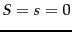, then we get an alternative idf formulation as follows:
This variant behaves slightly strangely: if a term occurs in over half the documents in the collection then this model gives a negative term weight, which is presumably undesirable. But, assuming the use of a stop list, this normally doesn't happen, and the value for each summand can be given a floor of 0.
We can improve on Equation 84 by factoring in the frequency of each term and document length:
![\begin{displaymath}
RSV_d = \sum_{t \in q} \log\left[\frac{N}{\docf_t}\right]\cd...
...mf_{td}}
{k_1 ((1-b) + b\times (L_d/ L_{ave})) + \termf_{td}}
\end{displaymath}](img771.png) |
(86) |
Here,
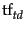 is the frequency of term
 in document
, and
in document
, and
 and
and
 are the length of document
and the average document length for the whole collection. The variable
are the length of document
and the average document length for the whole collection. The variable
 is a positive tuning parameter that calibrates the document term frequency scaling. A
value of 0 corresponds to a binary model (no term frequency), and a large value corresponds to using raw term frequency.
is a positive tuning parameter that calibrates the document term frequency scaling. A
value of 0 corresponds to a binary model (no term frequency), and a large value corresponds to using raw term frequency.
 is another tuning parameter (
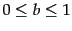) which determines the scaling by document length:
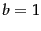 corresponds to fully scaling the term weight by the document length, while
is another tuning parameter (
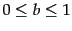) which determines the scaling by document length:
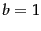 corresponds to fully scaling the term weight by the document length, while
 corresponds to no length normalization.
corresponds to no length normalization.
If the query is long, then we might also use similar weighting for query terms. This is appropriate if the queries are paragraph long information needs, but unnecessary for short queries.
with
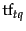 being the frequency of term
in the query
 , and
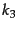 being another positive tuning parameter that this time calibrates term frequency scaling of the query. In the equation presented, there is no length normalization of queries (it is as if
here). Length normalization of the query is unnecessary because retrieval is being done with respect to a single fixed query. The tuning parameters of these formulas should ideally be set to optimize performance on a development test collection (see page
8.1 ). That is, we can search for values of these parameters that maximize performance on a separate development test collection (either manually or with optimization methods such as grid search or something more advanced), and then use these parameters on the actual test collection. In the absence of such optimization, experiments have shown reasonable values are to set
and
to a value between 1.2 and 2 and
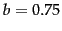.
, and
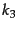 being another positive tuning parameter that this time calibrates term frequency scaling of the query. In the equation presented, there is no length normalization of queries (it is as if
here). Length normalization of the query is unnecessary because retrieval is being done with respect to a single fixed query. The tuning parameters of these formulas should ideally be set to optimize performance on a development test collection (see page
8.1 ). That is, we can search for values of these parameters that maximize performance on a separate development test collection (either manually or with optimization methods such as grid search or something more advanced), and then use these parameters on the actual test collection. In the absence of such optimization, experiments have shown reasonable values are to set
and
to a value between 1.2 and 2 and
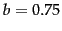.
If we have relevance judgments available, then we can use the full form of smoothed-rf in place of the approximation
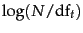 introduced in prob-idf:
|
 |
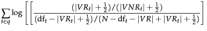 |
(88) |
| |
|
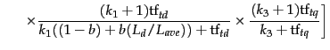 |
(89) |
Here,
 ,
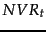, and
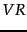 are used as in Section
11.3.4 . The first part of the expression reflects relevance feedback (or just idf weighting if no relevance information is available), the second implements document term frequency and document length scaling, and the third considers term frequency in the query.
,
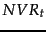, and
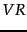 are used as in Section
11.3.4 . The first part of the expression reflects relevance feedback (or just idf weighting if no relevance information is available), the second implements document term frequency and document length scaling, and the third considers term frequency in the query.
Rather than just providing a term weighting method for terms in a user's query, relevance feedback can also involve augmenting the query (automatically or with manual review) with some (say, 10-20) of the top terms in the known-relevant documents as ordered by the relevance factor  from Equation 75, and the above formula can then be used with such an augmented query vector .
from Equation 75, and the above formula can then be used with such an augmented query vector .
The BM25 term weighting formulas have been used quite widely and quite successfully across a range of collections and search tasks. Especially in the TREC evaluations, they performed well and were widely adopted by many groups. See Spärck Jones et al. (2000) for extensive motivation and discussion of experimental results.
Next:
Bayesian network approaches to
Up:
An appraisal and some
Previous:
Tree-structured dependencies between terms
Contents
Index
© 2008 Cambridge University Press
This is an automatically generated page. In case of formatting errors you may want to look at the PDF edition of the book.
2009-04-07